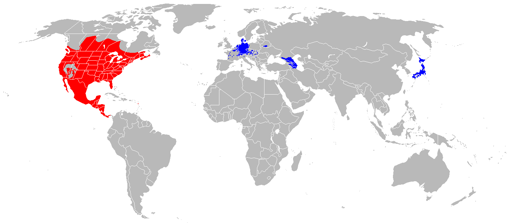

O site que se apresenta, "Raccoon", tem como principal objetivo descrever as mais importantes características do Guaxinim. Neste site, podem ser consultadas informações, como as subespécies, tipo de alimentação, habitat e curiosidades acerca deste animal.
Este animal, de cabeça grande, focinho pontiagudo, pêlo longo e uma cauda densa, dorme durante o dia com o intuito de à noite ir procurar comida. Apesar de só comer se consentir o cheiro da presa, o Guaxinim persegue-a no chão ou até mesmo em águas rasas, conseguindo um maior pormenor e eficácia na caça.
O Guaxinim não hiberna, apesar de dormir profndamente. Deixa a sua "toca" em momentos em que a temperatura aumenta.
A esperança de vida varia entre 2 e 3 anos, sendo considerado que este animal passa o seu tempo na natureza/ar livre.
| Características | Valores |
| Peso(kg)* | 3.5 - 9 |
| Velocidade(km/h) | 16 - 24 |
| Altura(cm)# | 23 - 30 |
| Período de gestação(dias) | 63 - 65 |
* - peso relativo a um Guaxinim adulto
# - valores medidos até à cernelha
Um facto menos agradável é o de o número de subespécies de Guaxinim estar a diminuir. Em 2005, o valor encontrava-se nas 22, contudo, atualmente, 2 destas subespécies já se encontram extintas.
Na tabela seguinte são referidas algumas subespécies da espécie Procyon lotor(Guaxinim).
| Taxonomia | Designação |
| Reino | Animalia |
| Classe | Mammalia |
| Família | Procyonidae |
| Espécie | Procyon lotor |
| Subespécies | Procyon lotor auspicatus |
| Procyon lotor elucus | |
| Procyon lotor excelsus | |
| Procyon lotor fuscipes | |
| Procyon lotor gloveralleni | |
| Procyon lotor grinnelli |
Os guaxinins têm "inimigos" na natureza, ou seja, espécies perigosas que podem colocar em risco a sua existência, como por exemplo:
Espécie nativa da América do Norte com alto risco de extinção. O seu período de reprodução situa-se nos meses de fevereiro e abril.
Considerada um relevante predador dos guaxinins.
Espécie encontrada nas regiões da América do Norte e Central. Agrupa-se, por vezes, em matilhas, vivendo sozinha a maior parte do tempo.
Representa menor perigo que a espécie anteriormente referida, atacando apenas guaxinins quando estes estão feridos ou são jovens.
Mamífero de médio porte. É um dos carnívoros que tem um maior valor em termos de distribuição da espécie pelo planeta Terra.
É usual dominar o Guaxinim, apesar de este tipo de espécie e dos guaxinins não se encontrarem com elevada frequência.
Estes animais omnívoros, para se alimentarem, servem-se de insetos, lesmas, peixes de pequena dimensão, ratos, cobras, bem como de pássaros. Para além disto, consomem igualmente cereais, frutas e ovos.
Ao longo do dia, o chão, árvores ocas ou até mesmo buracos servem para os animais desta espécie dormirem. Os guaxinins têm como lugar predileto as florestas junto a pântanos e água.
Esta espécie de animais ocupa/distribui-se por áreas distintas do planeta, começando por estar na zona do continente Americano(zona nativa dos guaxinins) e passando, tempos mais tarde, para a região europeia e asiática, como se pode verificar na figura que se segue (vermelho- zona nativa; azul- zona onde foram introduzidos).
